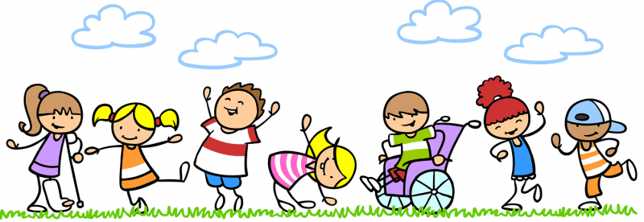

Психологічна служба
Безкоштовна психологічна та правова допомога в СЗШ № 50 м. Львова: графік консультацій психолога й юриста та телефони ліній кризової психологічної допомоги.
Даруємо любов і турботу кожному! Ми готові у будь-який час прийняти кожну дитину й створити максимально сприятливе середовище для розвитку її потенціалу.

Інклюзивне навчання — комплексний процес забезпечення рівного доступу до якісної освіти учнів з особливими потребами шляхом залучення їх до загального освітнього середовища.
Інклюзія розглядається як процес визнання і реагування на різноманітність потреб усіх тих, хто навчається: активну участь у процесі отримання знань, у культурному і суспільному житті. Це надання можливостей для рівної участі дітей з інвалідністю (фізичною, соціальною і емоційною) у загальній системі здобуття освіти, для індивідуального вибору й отримання спеціальних послуг і пристосувань для тих, кому це необхідно.
Інклюзивне середовище в школі створює потужна команда спеціалістів своєї справи:
У нашому навчальному закладі створені всі умови для надання корекційно-розвиткових занять.
Кабінет оснащений настінним дзеркалом для індивідуальної роботи з корекції звуковимови, наочно-дидактичним матеріалом, різноманітними іграми та яскравими іграшками, які допомагають досягти успіхів у подоланні недоліків мовлення. Кваліфікований логопед-дефектолог володіє ефективними методами корекції порушень фонематичних процесів і труднощів формування складової структури слова, постановки та автоматизації проблемних звуків.
Щоб підготувати дітей з особливими освітніми потребами до самостійного життя й організації власного побуту, у нас функціонує кабінет соціально-побутового орієнтування. Заняття спрямовані на практичну підготовку: учні вчаться доглядати за одягом, готувати їжу, вести домашній побут. Одним із важливих елементів програми корекційно-розвиткової роботи є статеве виховання. Кваліфікований фахівець з великим досвідом роботи складає програму, орієнтовану на потреби дитини, що сприяє формуванню життєвих компетентностей.
Обладнана сучасна сенсорна кімната для психологічного розвантаження. Заняття в такому приміщенні дарують відчуття безпеки, розслабленості, радості й стимулюють активність дітей з низькою мотивацією.
Навчання в ресурсній кімнаті базується на індивідуальних потребах кожного учня й спрямоване на залучення до навчання або на усунення факторів, що перешкоджають навчанню в класі.
Навчання вчителів — важливий аспект інклюзивного навчання, тому педагоги нашої школи щороку проходять курси підвищення кваліфікації, беруть участь у міжнародних конференціях і діляться досвідом із колегами.


Оновлено: